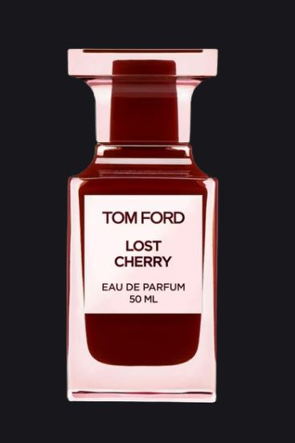
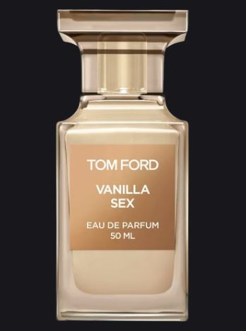

Oud Wood

Tobacco Vanille

Парфюмерия Tom Ford — это люксовые и нишевые ароматы, символизирующие сексуальность, смелость и современную роскошь. Бренд известен стойкими композициями с уникальным звучанием, разделенными на линии Signature и Private Blend. Знаковыми ароматами являются «Black Orchid», «Lost Cherry», «Tobacco Vanille» и «Oud Wood».
Private Blend (Нишевая коллекция): Это «лаборатория» Тома Форда, где создаются сложные, часто унисекс-ароматы, не ориентированные на массового потребителя. Lost Cherry (2018): Один из самых известных ароматов с нотами вишни, ликера и горького миндаля
Основные аккорды парфюма Tom Ford Lost Cherry — это насыщенная вишня, сладкий миндаль, пряный ликер и теплые древесно-бальзамические ноты

Vanilla Sex (2023): Новинка, гурманский аромат с нотами ванили, миндаля и сандала.

Основные аккорды — гурманская индийская ваниль, абсолют ванили, сандал, бобы тонка, жасмин и животные оттенки
Neroli Portofino (2010): Свежая средиземноморская композиция, напоминающая о лете.

Основные аккорды включают яркие ноты нероли, бергамота, лимона и мандарина, дополненные цветами апельсина (флердоранжем), лавандой и базовыми нотами амбры и мускуса